14 動的線形モデル
本章では, 動的線形モデル (Dynamic Linear Models) を扱うRパッケージを幾つか取り上げ, 利用方法を紹介する. 特に, 共通のデータセット (ナイル川の年間流量) に対する共通のモデル (local levelモデル, ランダムウォーク+ノイズ・モデル) を用いて, 各々のパッケージにおける操作 (フィルタリング・平滑化 (スムージング)・予測等) を行い, 使い勝手を比較する.
- Nileデータセット
- アスワン (Aswan) におけるナイル川の年間流量の計測量
- 1871--1970年 (単位 10^8立方メートル)
- 1898年付近に変化点が見られる (Cobb(1978), Table 1, p.249）14.1 パッケージdlm
- 出所:
- Petris, Petrone, and Campagnoli (2009). Dynamic Linear Models with R. Springer.
パッケージdlmについて: - 動的線形モデル (DLM) のベイズ分析用パッケージ - DLMのパラメータの最尤推定とカルマン・フィルターの関数を含む
- dlm()関数: Dynamic Linear Objectsの生成
- dlmModReg()関数: 線形回帰モデルのDLM表現
- dlmModPoly()関数: $n$-次多項式DLM表現
- order=1: local level(ランダムウォーク+ノイズ)
- order=2: stochastic linear trend (局所線形トレンドモデル)(デフォルト)
- dlmModSeas()関数: 季節成分のDLM表現
- dlmModTrig()関数: 周期成分のDLM表現
- dlmModARMA()関数: (多変量)ARMA過程のDLM表現- dlmModReg()関数
- dV: 観測ノイズ$V$
- dW: システムノイズの共分散行列$W$対角成分
- m0: 状態ベクトル初期値の期待値$m0$
- C0: 状態ベクトル初期値の共分散行列$C0$- 以下の実行結果の解説, Petris, et al.(2009), Ch.2を参照
library(dlm)
## Linear regression as a DLM
x <- matrix(rnorm(10),ncol = 2) # 説明変数 (デザイン行列)
mod <- dlmModReg(x)
# is.dlm(mod)
mod
## $FF
## [,1] [,2] [,3]
## [1,] 1 1 1
##
## $V
## [,1]
## [1,] 1
##
## $GG
## [,1] [,2] [,3]
## [1,] 1 0 0
## [2,] 0 1 0
## [3,] 0 0 1
##
## $W
## [,1] [,2] [,3]
## [1,] 0 0 0
## [2,] 0 0 0
## [3,] 0 0 0
##
## $JFF
## [,1] [,2] [,3]
## [1,] 0 1 2
##
## $X
## [,1] [,2]
## [1,] 0.2349 -0.5491
## [2,] -2.06 -1.161
## [3,] ...
##
## $m0
## [1] 0 0 0
##
## $C0
## [,1] [,2] [,3]
## [1,] 1e+07 0e+00 0e+00
## [2,] 0e+00 1e+07 0e+00
## [3,] 0e+00 0e+00 1e+07
## Adding dlm's
# dlmModPoly() + dlmModSeas(4) # linear trend plus quarterly seasonal component- dlmModPoly()関数: $n$-次多項式DLMの生成
- order=1: local level(ランダムウォーク+ノイズ)
- order=2: stochastic linear trend (局所線形トレンドモデル)(デフォルト)## the default
dlmModPoly()
## $FF
## [,1] [,2]
## [1,] 1 0
##
## $V
## [,1]
## [1,] 1
##
## $GG
## [,1] [,2]
## [1,] 1 1
## [2,] 0 1
##
## $W
## [,1] [,2]
## [1,] 0 0
## [2,] 0 1
##
## $m0
## [1] 0 0
##
## $C0
## [,1] [,2]
## [1,] 1e+07 0e+00
## [2,] 0e+00 1e+07
## random walk plus noise
dlmModPoly(1, dV = .3, dW = .01)
## $FF
## [,1]
## [1,] 1
##
## $V
## [,1]
## [1,] 0.3
##
## $GG
## [,1]
## [1,] 1
##
## $W
## [,1]
## [1,] 0.01
##
## $m0
## [1] 0
##
## $C0
## [,1]
## [1,] 1e+07local levelモデル
- cf. https://kevinkotze.github.io/ts-4-tut/
- local level modelの例

NilePoly <- dlmModPoly(order = 1, dV = 15100, dW = 1468)
unlist(NilePoly)
## m0 C0 FF V GG W
## 0 10000000 1 15100 1 1468- フィルタリング
- 最新の観測値に基づいて, 現在の状態を推定
- Kalman filterによる, 状態空間ベクトルのフィルター値と, 分散共分散行列の計算
NileFilt <- dlmFilter(Nile, NilePoly)
#str(NileFilt, 1)
n <- length(Nile)
attach(NileFilt)
#dlmSvd2var(U.C[[n + 1]], D.C[n + 1, ])- S/N比 (\(W/V\)), Kalman”ゲイン”を決める重要な要因
- 観測値の変動に対する状態の(事前→事後)更新の感応度合い
plot(Nile, type = 'o', col = c("darkgrey"),
xlab = "", ylab = "Level")
mod1 <- dlmModPoly(order = 1, dV = 15100, dW = 755)
NileFilt1 <- dlmFilter(Nile, mod1)
lines(dropFirst(NileFilt1$m), lty = "longdash")
mod2 <- dlmModPoly(order = 1, dV = 15100, dW = 7550)
NileFilt2 <- dlmFilter(Nile, mod2)
lines(dropFirst(NileFilt2$m), lty = "dotdash")
leg <- c("data", paste("filtered, W/V =",
format(c(W(mod1) / V(mod1),
W(mod2) / V(mod2)))))
legend("bottomright", legend = leg,
col=c("darkgrey", "black", "black"),
lty = c("solid", "longdash", "dotdash"),
pch = c(1, NA, NA), bty = "n")
- スムージング (平滑化)
- 最新時点までの全観測値を使い, 過去の全時点の状態を推定(し直す)
NileSmooth <- dlmSmooth(NileFilt)
str(NileSmooth, 1)
## List of 3
## $ s : Time-Series [1:101] from 1870 to 1970: 1111 1111 1111 1105 1113 ...
## $ U.S:List of 101
## $ D.S: num [1:101, 1] 74.1 63.5 56.9 53.1 50.9 ...
attach(NileSmooth)
drop(dlmSvd2var(U.S[[n + 1]], D.S[n + 1,]))
## [1] 4031.035
drop(dlmSvd2var(U.C[[n + 1]], D.C[n + 1,]))
## [1] 4031.035
drop(dlmSvd2var(U.S[[n / 2 + 1]], D.S[n / 2 + 1,]))
## [1] 2325.985
drop(dlmSvd2var(U.C[[n / 2 + 1]], D.C[n / 2 + 1,]))
## [1] 4031.035
hwid <- qnorm(0.025, lower = FALSE) *
sqrt(unlist(dlmSvd2var(U.S, D.S)))
smooth <- cbind(s, as.vector(s) + hwid %o% c(-1, 1))
plot(dropFirst(smooth), plot.type = "s", type = "l",
lty = c(1, 5, 5), ylab = "Level", xlab = "",
ylim = range(Nile))
lines(Nile, type = "o", col = "darkgrey")
legend("bottomleft", col = c("darkgrey", rep("black", 2)),
lty = c(1, 1, 5), pch = c(1, NA, NA), bty = "n",
legend = c("data", "smoothed level",
"95% probability limits"))
- 予測
a <- window(cbind(Nile, NileFilt1$f, NileFilt2$f),
start = 1880, end = 1920)
plot(a[, 1], type = 'o', col = "darkgrey",
xlab = "", ylab = "Level")
lines(a[, 2], lty = "longdash")
lines(a[, 3], lty = "dotdash")
leg <- c("data", paste("one-step-ahead forecast, W/V =",
format(c(W(mod1) / V(mod1),
W(mod2) / V(mod2)))))
legend("bottomleft", legend = leg,
col = c("darkgrey", "black", "black"),
lty = c("solid", "longdash", "dotdash"),
pch = c(1, NA, NA), bty = "n")
mod0 <- dlmModPoly(order = 1, dV = 15100, dW = 1468)
X <- ts(matrix(mod0$W, nc = 1, nr = length(Nile)),
start = start(Nile))
window(X, 1898, 1899) <- 12 * mod0$W
modDam <- mod0
modDam$X <- X
modDam$JW <- matrix(1, 1, 1)
damFilt <- dlmFilter(Nile, modDam)
mod0Filt <- dlmFilter(Nile, mod0)
a <- window(cbind(Nile, mod0Filt$f, damFilt$f),
start = 1880, end = 1920)
plot(a[, 1], type = 'o', col = "darkgrey",
xlab = "", ylab = "Level")
lines(a[, 2], lty = "longdash")
lines(a[, 3], lty = "dotdash")
abline(v = 1898, lty = 2)
leg <- c("data", paste("one-step-ahead forecast -",
c("mod0", "modDam")))
legend("bottomleft", legend = leg,
col = c("darkgrey", "black", "black"),
lty = c("solid", "longdash", "dotdash"),
pch = c(1, NA, NA), bty = "n")
- モデル診断


local level plus seasonal componentモデル
データ2: 英国における耐久消費財の消費支出 (四半期ベース), 1957Q1–1967Q4, Time Series Data Library: https://robjhyndman.com/tsdl/)
- 出所: Petris, etal (2009), p.64–
- qconsum.dat
- quarterly consumer expenditure
- durable goods
- all other goods and services
- investment
- inventory investment
- imports of goods and services
- gross domestic product
- personal disposable income
- Source: (Hyndman (n.d.)expd <- ts(read.table("qconsum.dat", skip = 4,
colClasses = "numeric")[, 1],
start = c(1957, 1), frequency = 4)
expd.dlm <- dlm(m0 = rep(0,4), C0 = 1e8 * diag(4),
FF = matrix(c(1, 1, 0, 0), nr = 1),
V = 1e-3,
GG = bdiag(matrix(1),
matrix(c(-1, -1, -1, 1, 0, 0, 0, 1, 0),
nr = 3, byrow = TRUE)),
W = diag(c(771.35, 86.48, 0, 0), nr = 4))
plot(expd, xlab = "", ylab = "Expenditures", type = 'o',
col = "darkgrey")
### Filter
expdFilt <- dlmFilter(expd, expd.dlm)
lines(dropFirst(expdFilt$m[, 1]), lty = "dotdash")
### Smooth
expdSmooth <- dlmSmooth(expdFilt)
lines(dropFirst(expdSmooth$s[,1]), lty = "longdash")
legend("bottomright", col = c("darkgrey", rep("black", 2)),
lty = c("solid", "dotdash", "longdash"),
pch = c(1, NA, NA), bty = "n",
legend = c("data", "filtered level", "smoothed level"))
### Seasonal component
plot(dropFirst(expdSmooth$s[, 3]), type = 'o', xlab = "",
ylab = "Expenditure - Seasonal component")
abline(h = 0)
- 予測
set.seed(1)
expdFore <- dlmForecast(expdFilt, nAhead = 12, sampleNew = 10)
plot(window(expd, start = c(1964, 1)), type = 'o',
xlim = c(1964, 1971), ylim = c(350, 850),
xlab = "", ylab = "Expenditures")
names(expdFore)
## [1] "a" "R" "f" "Q" "newStates" "newObs"
attach(expdFore)
invisible(lapply(newObs, function(x)
lines(x, col = "darkgrey",
type = 'o', pch = 4)))
lines(f, type = 'o', lwd = 2, pch = 16)
abline(v = mean(c(time(f)[1], time(expd)[length(expd)])),
lty = "dashed")
- その他
- 未知パラメータの推定(特に, \(V,W\))は, dlmMLE()関数により最尤推定が可能
- 代替法. ベイズ推定
- 詳細は, Petris, et al. (2009), Ch.4を参照のこと
参考文献
Giovanni Petris (2010). An R Package for Dynamic Linear Models. Journal of Statistical Software, 36(12), 1-16. http://www.jstatsoft.org/v36/i12/.
14.2 パッケージstatespacer
パッケージstatespacerについて:
- 状態空間モデルにおける以下の成分をカバー：
- The Local Level
- The Local Level + Slope
- Smoothing Splines
- Trigonometric Seasonality, BSM
- (Business) Cycles
- Explanatory Variables
- Explanatory Variables with time-varying coefficients
- Explanatory Variables in the Local Level
- Explanatory Variables in the Local Level + Slope
- ARIMA
- SARIMA
- 独自に指定した成分
- これらの成分は, 一変量モデルにも多変量モデルにも使用可能. 成分を組み合わせることも可能.
- 各ユーザーは, 各成分の分散-共分散行列の形式をコントロールすることで, 成分を確率的ではなく非確率的に指定可能.
- 多変量の場合, 分散-共分散行列にランク制約を課すことで, 共通のレベルや傾きなど, 成分中の共通性が推定されるようにすることも可能.
install.packages("statespacer")
# install.packages("devtools")
# devtools::install_github("DylanB95/statespacer")local levelモデル
ナイル川データセットに対して, local levelモデルを適用. - local levelモデル. 観測変数 \(y_t\) に対して, \[ y_t = \mu_t + \epsilon_t,\ \epsilon_t \sim 𝑁(0,\sigma^2_\epsilon) \\ \mu_{t+1} = \mu_t + \eta_t,\ \eta_t \sim 𝑁(0,\sigma^2_\eta) \] ここで, \(\mu_t\)は時点\(t\)における (未知の) 水準 (level), \(\epsilon_t,\eta_t\)は攪乱項. このモデルは, 二つの未知パラメータ\(\sigma^2_\epsilon,\sigma^2_\eta\) (攪乱項の分散) を持ち, これらは最尤法により求められる. 状態変数 \(\mu_t\) はKalman filterにより推定される.
- ナイル川データセットの読み込み
- local levelモデルの適合
fit <- statespacer(y = y,
local_level_ind = TRUE,
initial = 0.5 * log(var(y)),
verbose = TRUE)
## Parameter scaling:[1] 1 1
## initial value 6.623273
## iter 10 value 6.334646
## final value 6.334646
## converged- 攪乱項の分散\(\sigma^2_\epsilon,\sigma^2_\eta\)の推定値の確認.
- 推定されたレベル
plot(1871:1970, fit$function_call$y, type = 'p', ylim = c(500, 1400),
xlab = NA, ylab = NA,
sub = "The filtered level with 90% confidence intervals,
and the observed data points"
)
lines(1871:1970, fit$filtered$level, type = 'l')
lines(1871:1970, fit$filtered$level + qnorm(0.95) * sqrt(fit$filtered$P[1,1,]),
type = 'l', col = 'gray'
)
lines(1871:1970, fit$filtered$level - qnorm(0.95) * sqrt(fit$filtered$P[1,1,]),
type = 'l', col = 'gray'
)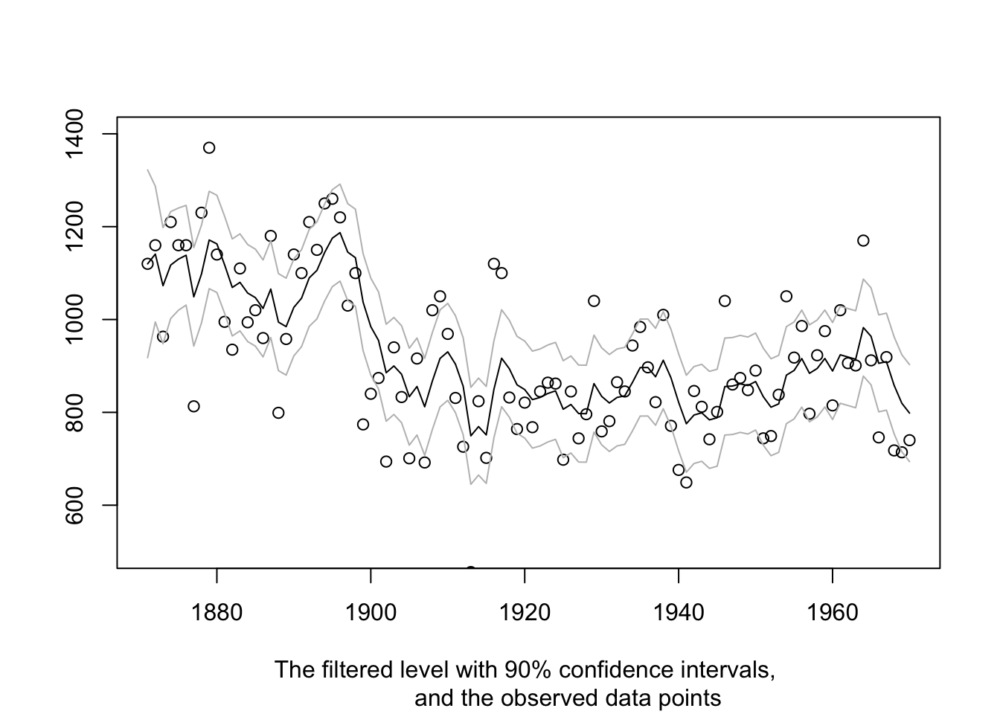
- 平滑化されたレベル
plot(1871:1970, fit$function_call$y, type = 'p', ylim = c(500, 1400),
xlab = NA, ylab = NA,
sub = "The smoothed level with 90% confidence intervals, and the observed data points")
lines(1871:1970, fit$smoothed$level, type = 'l')
lines(1871:1970, fit$smoothed$level + qnorm(0.95) * sqrt(fit$smoothed$V[1,1,]),
type = 'l', col = 'gray')
lines(1871:1970, fit$smoothed$level - qnorm(0.95) * sqrt(fit$smoothed$V[1,1,]),
type = 'l', col = 'gray')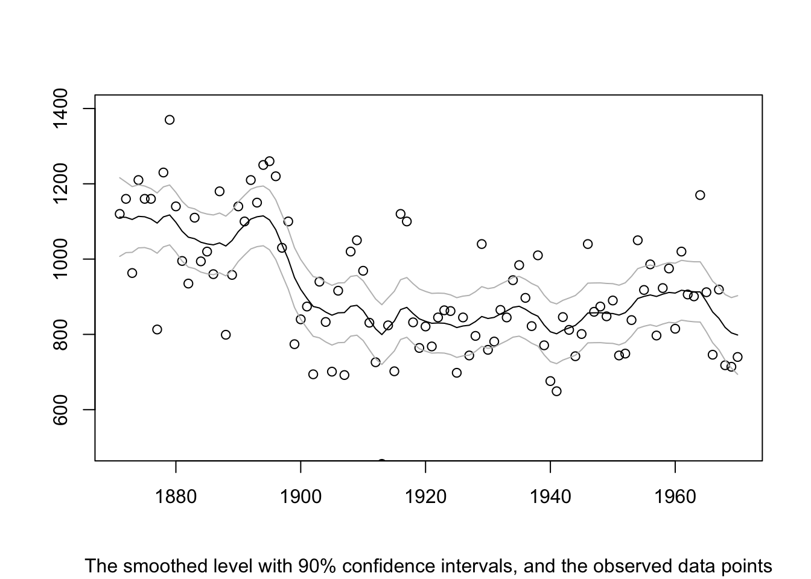
statespacer()によって返されるオブジェクトには, 他にも多くの便利なアイテム有り. これらの詳細については、vignette(“dictionary”, “statespacer”)を参照. statespacerパッケージの詳細については, https://DylanB95.github.io/statespacer/ の他のチュートリアルを参照するか, browseVignettes(“statespacer”)を参照せよ.
季節性への対応・説明変数の追加・従属変数が複数ある場合への対応
データセット: 英国自動車交通事故者数 (UK Road Deaths). 1969年1月–1984年12月までの英国自動車交通事故者数に関する月次データ.
- Seatbelts
- DriversKilled: 死亡した自動車ドライバー
- drivers: 英国における自動車運転者の死者・重傷者の月次合計 (データセットUKDriverDeathsの内容)
- front: 死亡または重傷を負った前席の同乗者
- rear: 死亡または重傷の後席の同乗者
- kms: 走行距離
- PetrolPrice: ガソリン価格
- VanKilled: バン (軽貨物車) の運転者数
- law: シートベルト着用義務化 (1983年1月31日) 以降は1, それ以前は0# Load statespacerlibrary(statespacer)# Load the dataset
library(datasets)
Data <- Seatbelts
# Data preparation
# The log of "drivers", "front", and "rear" will be used as dependent variables
# The log of "PetrolPrice" and "kms" will be used as explanatory variables
Data[, c("drivers", "front", "rear", "PetrolPrice", "kms")] <- log(Data[, c("drivers", "front", "rear", "PetrolPrice", "kms")])確定的水準と季節性を持つ1変量モデル
# Dependent variable
y <- as.matrix(Data[, "drivers"])
# Period of the seasonal component
BSM_vec <- 12
# Explanatory variables
# Note: Must be a list of matrices!
# Each dependent gets its own matrix of explanatory variables.
addvar_list <- list(as.matrix(Data[, c("PetrolPrice", "law")]))
# Format of the variance - covariance matrix of the level component
# By setting the elements of this matrix to 0,
# the component becomes deterministic.
format_level <- matrix(0)
# Format of the variance - covariance matrix of the seasonal component
# Note: This format must be a list of matrices, because multiple
# seasonalities can be specified!
format_BSM_list <- list(matrix(0)) - モデル適合
# Fitting the model
fit <- statespacer(y = y,
local_level_ind = TRUE,
BSM_vec = BSM_vec,
addvar_list = addvar_list,
format_level = format_level,
format_BSM_list = format_BSM_list,
method = "BFGS",
initial = 0.5 * log(var(y)),
verbose = TRUE)
## Parameter scaling:[1] 1
## initial value -0.443442
## final value -0.735372
## converged- パラメータ推定値
# The estimated variance of the observation disturbance
fit$system_matrices$H$H
## [,1]
## [1,] 0.007402017
# Smoothed estimate of the coefficient of log "PetrolPrice"
fit$smoothed$addvar_coeff[1, 1]
## [1] -0.4521301
# Smoothed estimate of the coefficient of the "law" dummy
fit$smoothed$addvar_coeff[1, 2]
## [1] -0.1971395
# Plot the data next to the smoothed level + explanatory variables components
plot(Data[, c("drivers")], type = "l", ylim = c(6.95, 8.1),
xlab = "year", ylab = "logarithm of drivers")
lines(seq(tsp(Data)[1], tsp(Data)[2], 1 / tsp(Data)[3]),
fit$smoothed$level + fit$smoothed$addvar, type = 'l', col = "red")
legend(1978, 8.09, c("log(drivers)", "level + regression effects"),
lty = c(1,1), lwd=c(2.5, 2.5), col = c("black", "red"))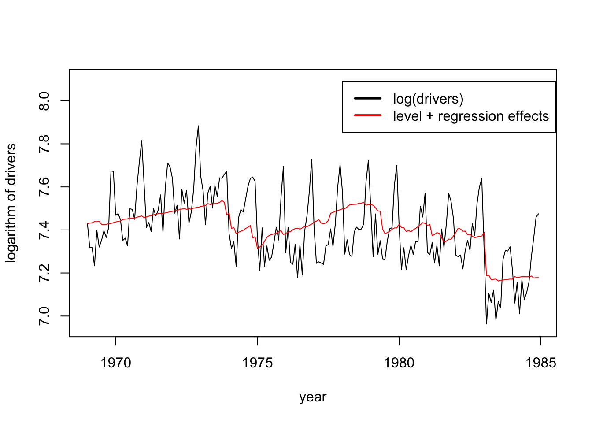
確率的水準+確率的季節性モデル (stochastic level and seasonal model)
- モデルの特定および適合
# By setting the entries in the format to 1, the component becomes stochastic
format_level <- matrix(1)
format_BSM_list <- list(matrix(1))
fit <- statespacer(y = y,
local_level_ind = TRUE,
BSM_vec = BSM_vec,
addvar_list = addvar_list,
format_level = format_level,
format_BSM_list = format_BSM_list,
method = "BFGS",
initial = log(var(y)),
verbose = TRUE)
## Parameter scaling:[1] 1 1 1
## initial value -0.172423
## iter 10 value -0.893962
## iter 20 value -0.915493
## iter 30 value -0.915515
## final value -0.915517
## converged- パラメータ推定値
# The estimated variance of the observation disturbance
fit$system_matrices$H$H
## [,1]
## [1,] 0.003786182
# The estimated variance of the level disturbance
fit$system_matrices$Q$level
## [,1]
## [1,] 0.0002676898
# The estimated variance of the seasonal disturbance
fit$system_matrices$Q$BSM12
## [,1]
## [1,] 1.161433e-06
# Smoothed estimate of the coefficient of log "PetrolPrice"
fit$smoothed$addvar_coeff[1, 1]
## [1] -0.2913941
# Smoothed estimate of the coefficient of the "law" dummy
fit$smoothed$addvar_coeff[1, 2]
## [1] -0.2377374# Plot the data next to the smoothed level + explanatory variables components
plot(Data[, c("drivers")], type = "l", ylim = c(6.95, 8.1),
xlab = "year", ylab = "logarithm of drivers")
lines(seq(tsp(Data)[1], tsp(Data)[2], 1 / tsp(Data)[3]),
fit$smoothed$level + fit$smoothed$addvar, type = 'l', col = "red")
legend(1978, 8.09, c("log(drivers)", "level + regression effects"),
lty = c(1,1), lwd=c(2.5, 2.5), col = c("black", "red"))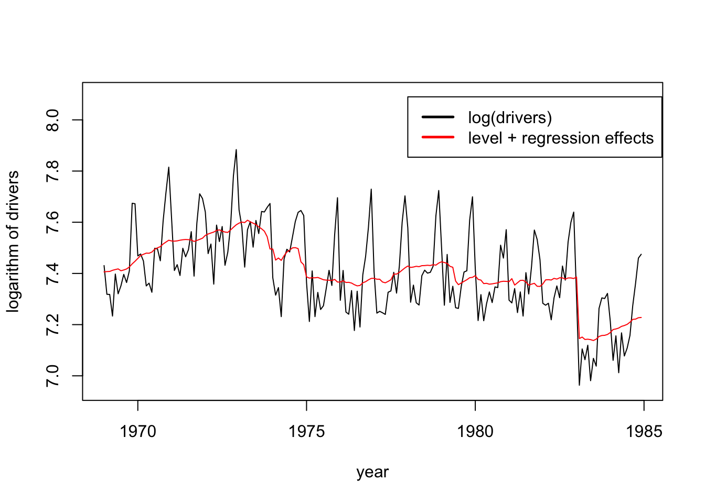
確率的季節性は, 時間と共にほとんど変化せず. 季節成分を確定的に, レベルのみを確率論的に設定する価値あり? (AICを比較し, どちらがベターか確認せよ).
# Plot the stochastic seasonal
plot(seq(tsp(Data)[1], tsp(Data)[2], 1 / tsp(Data)[3]),
fit$smoothed$BSM12,
type = "l", ylim = c(-0.2, 0.3),
xlab = "year", ylab = "stochastic seasonal")
abline(h = 0)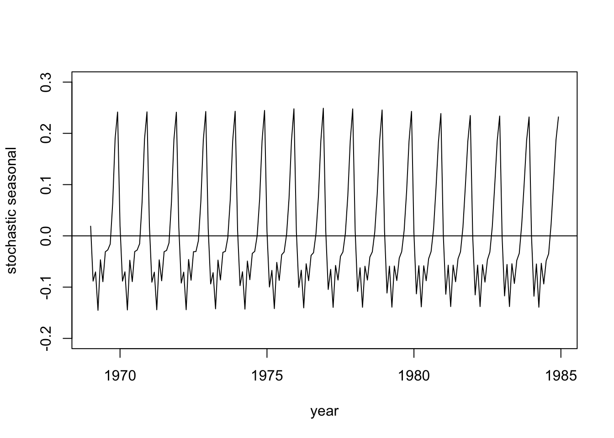
- 非規則性成分
plot(seq(tsp(Data)[1], tsp(Data)[2], 1/tsp(Data)[3]),
fit$smoothed$epsilon,
type = "l", ylim = c(-0.15, 0.15),
xlab = "year", ylab = "irregular component")
abline(h = 0)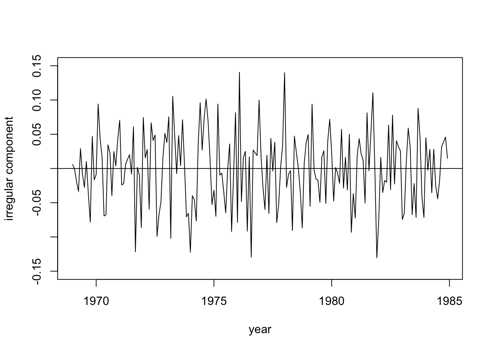
前部座席・後部座席の同乗者の2変量モデル
# Dependent variable
y <- as.matrix(Data[, c("front", "rear")])
# Explanatory variables
# Note: Must be a list of matrices!
# Each dependent gets its own matrix of explanatory variables.
X <- as.matrix(Data[, c("PetrolPrice", "kms", "law")])
addvar_list <- list(X, X)
# Format of the variance - covariance matrix of the level component
# Note: Only the lower triangular part of the format is used.
# The format specifies which elements in the matrices L and D should be
# non-zero, where L and D are the matrices of the Cholesky LDL decomposition.
# The diagonal is used to specify which elements of the Diagonal matrix
# should be non-zero. The lower triangular part excluding the diagonal
# specifies which elements in the Loading matrix should be non-zero.
format_level <- matrix(1, 2, 2)
# Format of the variance - covariance matrix of the seasonal component
# Note: This format must be a list of matrices, because multiple seasonalities
# can be specified!
format_BSM_list <- list(matrix(0, 2, 2))
# Format of the variance - covariance matrix of the observation disturbances
H_format <- matrix(1, 2, 2)- モデル適合
# Fitting the model
fit <- statespacer(y = y,
H_format = H_format,
local_level_ind = TRUE,
BSM_vec = BSM_vec,
addvar_list = addvar_list,
format_level = format_level,
format_BSM_list = format_BSM_list,
method = "BFGS",
initial = 0.5 * log(diag(var(y))),
verbose = TRUE)
## Parameter scaling:[1] 1 1 1 1 1 1
## initial value 0.389588
## iter 10 value -1.583531
## iter 20 value -1.676130
## iter 30 value -1.676530
## final value -1.676537
## converged(実行時間が多少かかる.)
- 推定結果
# The estimated variance - covariance matrix of the observation disturbance
fit$system_matrices$H$H
## [,1] [,2]
## [1,] 0.005402169 0.004449533
## [2,] 0.004449533 0.008566858
# The estimated variance - covariance matrix of the level disturbance
fit$system_matrices$Q$level
## [,1] [,2]
## [1,] 0.0002556381 0.0002247037
## [2,] 0.0002247037 0.0002319556
# Coefficients + T-stats
coeff <- cbind( c("front PetrolPrice", "front kms", "front law",
"rear PetrolPrice", "rear kms", "rear law"),
fit$smoothed$addvar_coeff[1,],
fit$smoothed$addvar_coeff[1,] / fit$smoothed$addvar_coeff_se[1,])
colnames(coeff) <- c("Variable", "Coefficient", "T-Stat")
coeff
## Variable Coefficient T-Stat
## [1,] "front PetrolPrice" "-0.30761498952755" "-2.898564300443"
## [2,] "front kms" "0.151804487016903" "1.16776317642797"
## [3,] "front law" "-0.337045864410277" "-6.84659677395525"
## [4,] "rear PetrolPrice" "-0.0857573081006879" "-0.763930782505291"
## [5,] "rear kms" "0.550388846597698" "3.79267978722466"
## [6,] "rear law" "0.000887654967915423" "0.0171338265272815"- 前部座席に関する水準のプロット
# plot of level for "front"
plot(seq(tsp(Data)[1], tsp(Data)[2], 1/tsp(Data)[3]),
fit$smoothed$level[, 1], type = "l",
xlab = "year", ylab = "level of front passengers")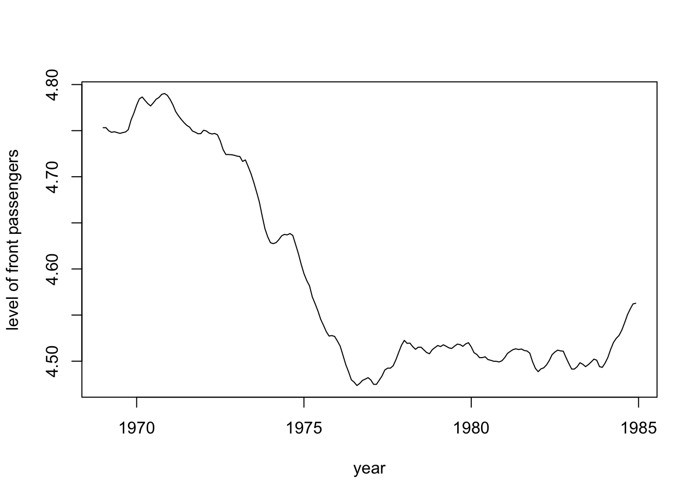
- 後部座席に関する水準のプロット
# plot of level for "rear"
plot(seq(tsp(Data)[1], tsp(Data)[2], 1/tsp(Data)[3]),
fit$smoothed$level[, 2], type = "l",
xlab = "year", ylab = "level of rear passengers")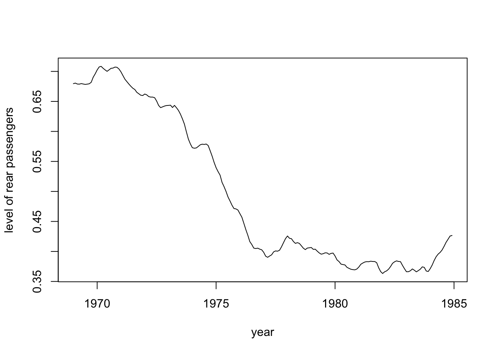
二つの水準の動きは似ており, 相関関係は1に近い.
fit$system_matrices$Q_correlation_matrix$level
## [,1] [,2]
## [1,] 1.0000000 0.9227734
## [2,] 0.9227734 1.0000000format_levelを以下のように設定することで, レベル成分の分散-共分散行列のランクを1に制限を加えることも可能:
この新しいモデル・スペシフィケーションにてモデルを推定してみるとどうなるか. なお, “rear”同乗者については”law”ダミーを削除し, “front”同乗者についてはダミーを残すと良いかもしれない.
14.3 パッケージbssm
出所:
- (Package ‘bssm’)[https://cran.r-project.org/web/packages/bssm/bssm.pdf]
- (bssm: Bayesian Inference of Non-linear and Non-Gaussian State Space Models in R)[https://cran.r-project.org/web/packages/bssm/vignettes/bssm.html]
パッケージbssmについて: Bayesian Inference of Non-Linear and Non-Gaussian State Space Models (非線形・非ガウス状態空間モデルのベイズ推論)
- 非ガウス and/or 非 線形の観測方程式と状態方程式を持つ一般的な状態空間モデルのベイズ推論を行う
- 外生共変量を含む基本構造時系列モデル(BSM) (Harvey 1989), 単純な確率ボラティリティ・モデル, 離散化拡散過程モデルなどの一般的な時系列モデルに対して, ベイジアンの設定における予測その他の推論を簡単かつ効率的に実行
具体的には, bssmパッケージでは, 次のモデルを仮定することができる:
- 指数分布族状態空間モデル (状態方程式は線形ガウス. 条件付き観測分布の密度関数は, 正規, ポアソン, 二項, 負の二項, ガンマ分布)
- 基本的な確率ボラティリティ・モデル
- ガウスノイズ項を持つ一般的な非線形モデル
- 連続確率微分方程式のダイナミクスを持つモデル パッケージ内で, モデルを構築するための各種関数が用意されている:
- bsm_lg: 基本的な一変量構造時系列モデル(BSM)
- ar1: ノイズ付きの1変量AR(1)過程
- ssm_ulg/ssm_mlg: 一変量/多変量観測値を持つ任意の線形ガウスモデル
- これらの非ガウス版として, 関数 bsm_ng, ar1_ng, ssm_ung/ssm_mng 等.
local levelモデル
ナイル川データセットNileに対して, local levelモデルを適合.
関数bsm_lg(): Basic Structural (Time Series) Model
- local level, またはlocal trend成分および季節性成分を持つ基本構造時系列モデル (Basic Structural Time Series Model) を構築する.
- usage:
bsm_lg(y, sd_y, sd_level, sd_slope, sd_seasonal, beta, xreg = NULL, period, a1 = NULL, P1 = NULL, D = NULL, C = NULL)
- 引数
- y: 観測値のvector, またはtsオブジェクト
- sd_y: 観測方程式のノイズの標準偏差
- sd_level: レベル方程式のノイズの標準偏差
- sd_slope: 勾配方程式のノイズの標準偏差
- sd_seasonal： 季節性方程式のノイズの標準偏差
- beta: 回帰係数の事前分布
- xreg: yの長さと同一の行数を持つ共変量行列
- period: 季節性パターンの長さ (2<period<入力時系列の長さ). デフォルトは frequency(y).
- a1: 初期状態（水準, 勾配, 季節性）の事前平均. デフォルトは0
- P1: 初期状態（水準, 勾配, 季節性）の事前共分散行列. 対角成分に100が並ぶ対角行列
- D: 観測方程式の切片項. 時変切片の場合はスカラー
- C: 状態方程式の切片項. m x n, または, m x 1の行列として与えられる．# Create a local level model (latent random walk + noise) to the Nile
# dataset using the bsm_lg function:
model <- bsm_lg(Nile,
sd_y = tnormal(init = 100, mean = 100, sd = 100, min = 0),
sd_level = tnormal(init = 50, mean = 50, sd = 100, min = 0),
a1 = 1000, P1 = 500^2)- tnormal: truncated normal distribution (切断正規分布)
- init: パラメータ初期値. モデル成分を初期化し, MCMCの初期値として使用
- min: truncated normal priorの下限値
- max: truncated normal priorの上限値
- sd: truncateする前の正規分布の標準偏差
- mean: 正規priorの平均.関数run_mcmc(): Bayesian Inference of State Space Models
- Vihola(2012)によるRobust Adaptive Metropolisアルゴリズムを用いたSSMのためのAdaptive MCMCシミュレーション. いくつかの異なるMCMCサンプリングスキームを実装.
- 主な引数 (詳しくはマニュアルを参照)
- model: bssm_modelクラスのモデル
- iter: MCMC繰り返し計算の回数
- output_type: "full"(デフォルト. 事後分布からの事後サンプルを返す), "theta" (未知パラメータthetaの周辺事後分布から), "summary" (状態とthetaの事後サンプルの平均と分散推定値を返す)
...
- 線形ガウスモデルの場合, オプション "summary"は、状態を直接シミュレーションするのではなく、高速カルマン平滑化を使って状態の事後平均と事後分散を計算
# the priors for the unknown paramters sd_y and sd_level were defined
# as trunctated normal distributions, see ?bssm_prior for details
# Run the MCMC for 2000 iterations (notice the small number of iterations to
# comply with the CRAN's check requirements)
fit <- run_mcmc(model, iter = 2000)
# Some diagnostics checks:
check_diagnostics(fit)
##
## Acceptance rate after the burn-in period: 0.234
##
## Run time (wall-clock):
## 0.03 seconds.
##
## Smallest bulk-ESS: 68 (level[90])
## Smallest tail-ESS: 22 (level[91])
## Largest Rhat: 1.045 (level[58])# print some summary information:
fit
##
## Call:
## run_mcmc.lineargaussian(model = model, iter = 2000)
##
## Iterations = 1001:2000
## Thinning interval = 1
## Length of the final jump chain = 235
##
## Acceptance rate after the burn-in period: 0.234
##
## Summary for theta:
##
## variable Mean SE SD 2.5% 97.5% ESS
## sd_level 44.36092 1.795784 16.97667 17.43660 77.52529 89
## sd_y 122.13758 1.114178 12.71891 98.71335 145.00349 130
##
## Summary for alpha_101:
##
## variable time Mean SE SD 2.5% 97.5% ESS
## level 1971 775.6908 7.828845 84.59991 613.8982 926.1021 117
##
## Run time:
## user system elapsed
## 0.030 0.001 0.030
# traceplots:
plot(fit)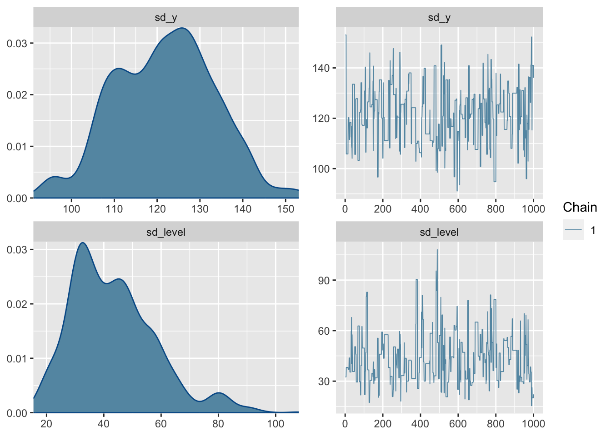
# extract the summary statistics for state variable
sumr <- summary(fit, variable = "states")
# visualize
library("ggplot2")
ggplot(sumr, aes(time, Mean)) +
geom_ribbon(aes(ymin = `2.5%`, ymax = `97.5%`),alpha = 0.25) +
geom_line() +
theme_bw()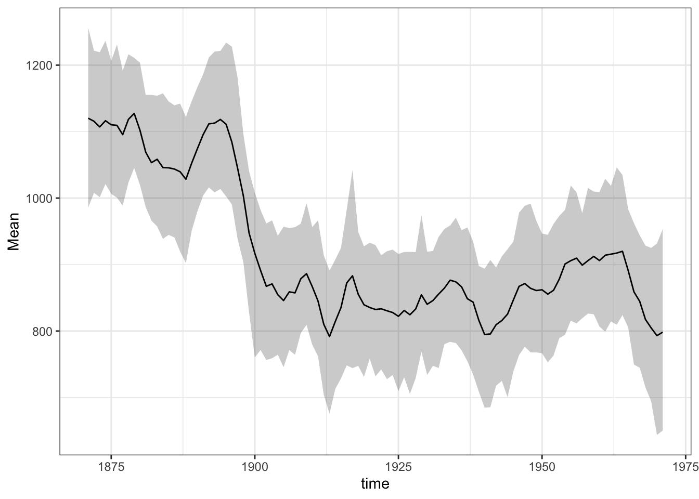
確率的季節性成分を持つドリフト有りランダムウォーク・モデル
- データセット: UKgas
- UKgas:
- 英国の四半期ガス消費量
- 1960年第1四半期--1986年第4四半期 (単位：百万トルム)UKgas
## Qtr1 Qtr2 Qtr3 Qtr4
## 1960 160.1 129.7 84.8 120.1
## 1961 160.1 124.9 84.8 116.9
## 1962 169.7 140.9 89.7 123.3
## 1963 187.3 144.1 92.9 120.1
## 1964 176.1 147.3 89.7 123.3
## 1965 185.7 155.3 99.3 131.3
## 1966 200.1 161.7 102.5 136.1
## 1967 204.9 176.1 112.1 140.9
## 1968 227.3 195.3 115.3 142.5
## 1969 244.9 214.5 118.5 153.7
## 1970 244.9 216.1 188.9 142.5
## 1971 301.0 196.9 136.1 267.3
## 1972 317.0 230.5 152.1 336.2
## 1973 371.4 240.1 158.5 355.4
## 1974 449.9 286.6 179.3 403.4
## 1975 491.5 321.8 177.7 409.8
## 1976 593.9 329.8 176.1 483.5
## 1977 584.3 395.4 187.3 485.1
## 1978 669.2 421.0 216.1 509.1
## 1979 827.7 467.5 209.7 542.7
## 1980 840.5 414.6 217.7 670.8
## 1981 848.5 437.0 209.7 701.2
## 1982 925.3 443.4 214.5 683.6
## 1983 917.3 515.5 224.1 694.8
## 1984 989.4 477.1 233.7 730.0
## 1985 1087.0 534.7 281.8 787.6
## 1986 1163.9 613.1 347.4 782.8prior <- halfnormal(0.1, 1)
UKgas_model <- bsm_lg(log10(UKgas),
sd_y = prior,
sd_level = prior,
sd_slope = prior,
sd_seasonal = prior)
mcmc_bsm <- run_mcmc(UKgas_model, iter = 4e4, seed = 1)
mcmc_bsm
##
## Call:
## run_mcmc.lineargaussian(model = UKgas_model, iter = 40000, seed = 1)
##
## Iterations = 20001:40000
## Thinning interval = 1
## Length of the final jump chain = 4666
##
## Acceptance rate after the burn-in period: 0.233
##
## Summary for theta:
##
## variable Mean SE SD 2.5% 97.5% ESS
## sd_level 0.005003611 1.755466e-04 0.003289163 0.0001617486 0.012013391 351
## sd_seasonal 0.026093324 1.219744e-04 0.003684879 0.0189052091 0.033431632 913
## sd_slope 0.001200382 2.345435e-05 0.000523736 0.0002079971 0.002309162 499
## sd_y 0.016314018 2.894970e-04 0.005538082 0.0043639303 0.026345063 366
##
## Summary for alpha_109:
##
## variable time Mean SE SD 2.5% 97.5%
## level 1987 2.84506115 3.656806e-04 0.01700774 2.811472331 2.87822366
## seasonal_1 1987 0.26737674 7.132008e-04 0.03544500 0.194987187 0.33908649
## seasonal_2 1987 0.06192612 4.155558e-04 0.01797639 0.028077857 0.09923766
## seasonal_3 1987 -0.29493927 3.003881e-04 0.01559836 -0.326940852 -0.26553733
## slope 1987 0.00974463 8.195493e-05 0.00395237 0.002323525 0.01816920
## ESS
## 2163
## 2470
## 1871
## 2696
## 2326
##
## Run time:
## user system elapsed
## 5.778 0.016 5.810d <- as.data.frame(mcmc_bsm, variable = "theta")
ggplot(d, aes(x = value)) +
geom_density(adjust = 3, fill = "#92f0a8") +
facet_wrap(~ variable, scales = "free") +
theme_bw()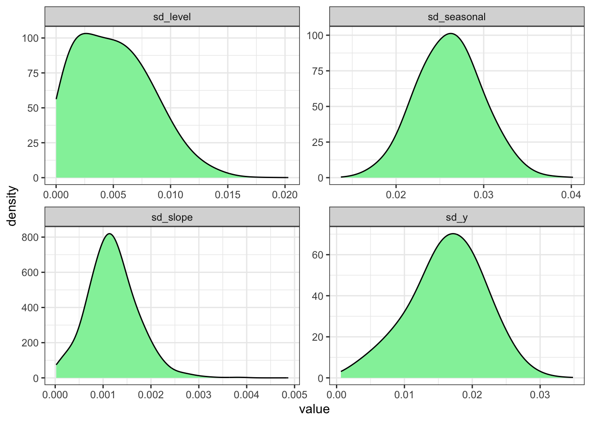
suppressMessages(library("dplyr"))
d <- as.data.frame(mcmc_bsm, variable = "states")
level_fit <- d |>
filter(variable == "level") |>
group_by(time) |>
summarise(consumption = mean(value),
lwr = quantile(value, 0.025),
upr = quantile(value, 0.975))
ggplot(level_fit, aes(x = time, y = consumption)) +
geom_ribbon(aes(ymin = lwr, ymax = upr),
fill = "#92f0a8", alpha = 0.25) +
geom_line(colour = "#92f0a8") +
geom_line(data = data.frame(
consumption = log10(UKgas),
time = time(UKgas)),
colour = "grey30", linetype = "dashed") +
theme_bw()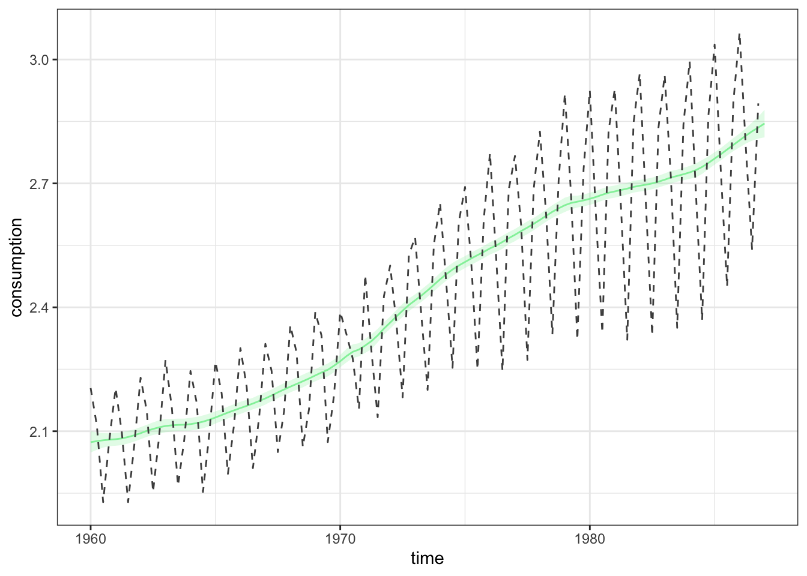
参考文献
Helske, Jouni, and Matti Vihola. 2021. “Bssm: Bayesian Inference of Non-Linear and Non-Gaussian State Space Models in R.” R Journal. https://arxiv.org/abs/2101.08492.